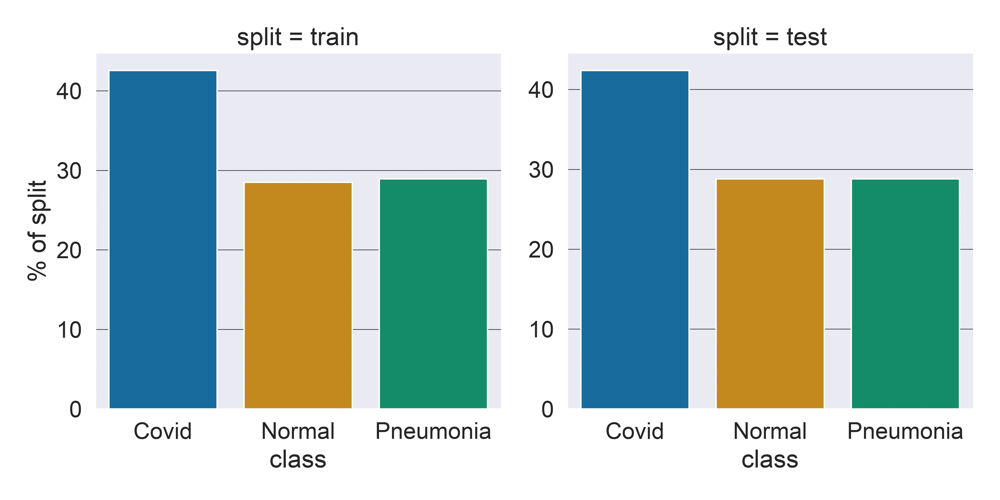
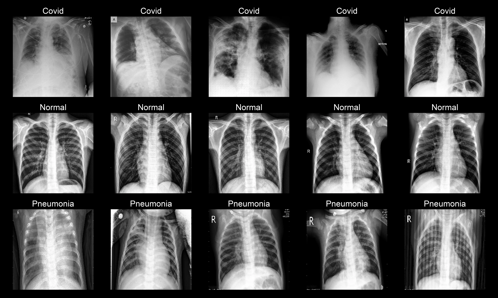
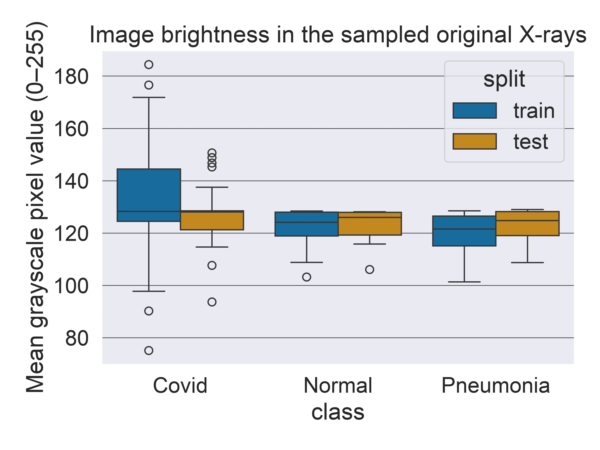
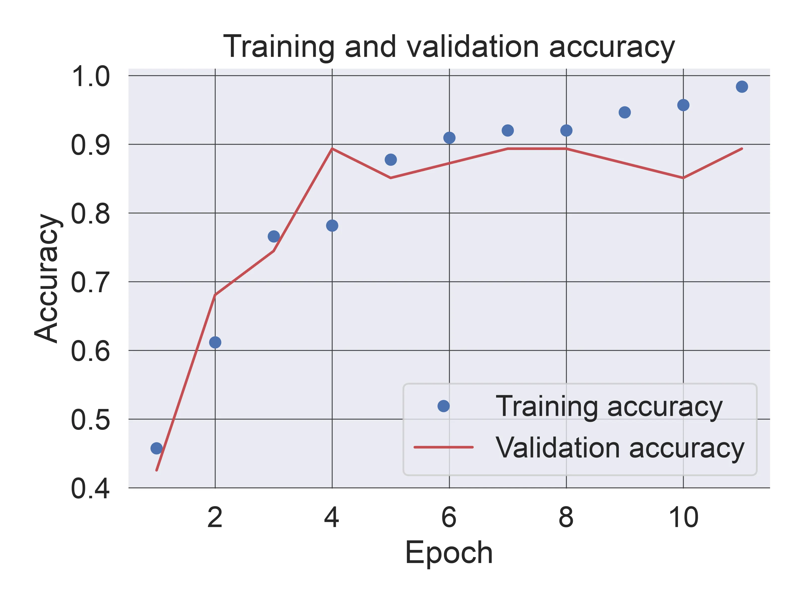
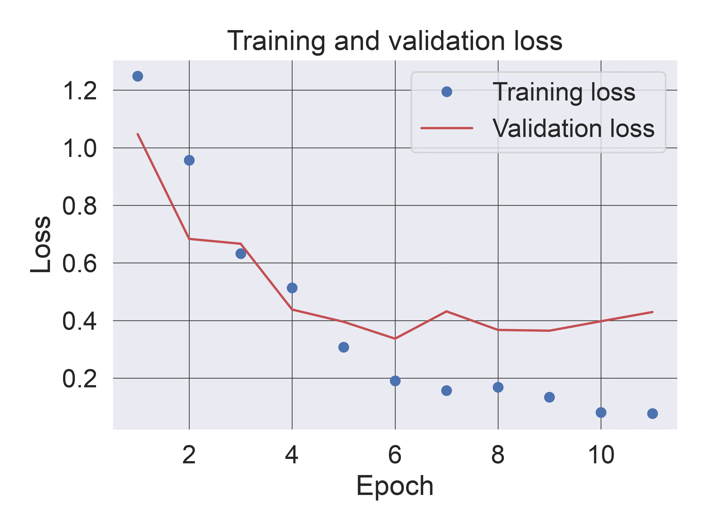
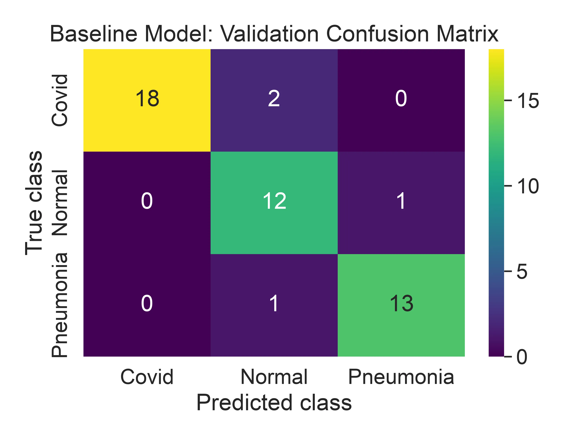

Introduction & The Task
Detecting pulmonary pathology from chest X-rays is a classic computer vision challenge where high model accuracy is needed but if not explained can be insufficient. I think that when we talk about clinical deployment of a model, interpretability, trustworthiness, and systematic error analysis are as important as the raw performance of the model. In other words, a neural model is useful in a medical context only if its predictions are both accurate and explainable. Accurate means low error rates across all three classes, not just on average. Explainable means you can inspect which regions of the image drove each decision. Without that second layer, a good aggregate score can hide a model that uses shortcuts.
In this project, I built an end-to-end medical image classification pipeline using a dataset of 294 chest X-rays categorised into three distinct classes: Covid, Normal, Pneumonia.
This part covers the exploratory data analysis; in other words, what type of data do I have, what are their properties and what classes I aim to predict with my model. Moreover, I will show and explain the steps followed behind the construction of the baseline which is used as a comparison point later.
The dataset
I started by exploring a bit my dataset and some of its properties.
As mentioned earlier, I have 294 chest X-rays: 125 labelled Covid, 84 labelled Normal, and 85 labelled Pneumonia
(see Figure 1).
Each X-ray can belong only to one class, thus I am dealing with a single-label classification problem.

The class distribution shows that Covid is the largest class, accounting for about 42% of both the training and test set. On the other hand, Normal and Pneumonia, account for approximately 29%.
These proportions are useful for the evaluation of the performance of the models later. If we think about it, a model that always predicts Covid will be around 42% accurate. For this reason, a useful model should perform substantially better than this. At the same time, we should keep in mind that it should perform well also on the other classes. This will give the model a more balanced performance.
All images are 256 x 256 pixels and my format check confirmed that their three colour channels
contain identical values. To put it simply, the images contain grayscale information
(see Figure 2).

| Dataset label | Training | Validation | Test | Total |
|---|---|---|---|---|
| Covid | 80 | 20 | 25 | 125 |
| Normal | 54 | 13 | 17 | 84 |
| Pneumonia | 54 | 14 | 17 | 85 |
| Total | 188 | 47 | 59 | 294 |
This splitting allows the model to learn from the 188 training images. Then I use the 47 validation images to monitor its performance on examples it does not train on and then choose when to stop training. For reproducibility reasons I use a fixed random seed.
I keep the 59 test images separate from the training and evaluation of the models. I use it only as the final assessment of the best performing model after the comparison (see Part 2)
Before proceeding to the construction of the baseline I performed a quick exploratory analysis. By doing so, I aimed to understand better the properties of the images in my dataset. First thing I did, for example, after counting the number of images for each class, was to calculate some simple image statistics that cannot be fully visible just by looking at the X-rays.
What I see are differences in framing, brightness (see Figure 3),
annotations and apparent image quality (see also table below). More specifically, in the training folder,
Covid images have a mean brightness of approximately 132 on the 0-255 scale, compared with 123 for
Normal and 120 for Pneumonia. Their average within-image pixel standard deviation is also lower:
approximately 61, compared with 76-78 for the other classes. Here, pixel standard deviation describes
how much brightness values vary within an image.

| sampled_images | median_width | median_height | mean_brightness | mean_pixel_std | ||
|---|---|---|---|---|---|---|
| split | class | |||||
| test | Covid | 25 | 256.0 | 256.0 | 127.3 | 61.2 |
| Normal | 17 | 256.0 | 256.0 | 123.2 | 76.0 | |
| Pneumonia | 17 | 256.0 | 256.0 | 123.6 | 76.0 | |
| train | Covid | 100 | 256.0 | 256.0 | 132.0 | 61.3 |
| Normal | 67 | 256.0 | 256.0 | 122.6 | 76.4 | |
| Pneumonia | 68 | 256.0 | 256.0 | 120.0 | 77.6 |
Moreover, the Covid images also contain a smaller proportion of near-black pixels: approximately 3%, compared with 6-8% for the other training classes (see table below). Having these stylistic differences between images, there is one question worth keeping in mind and at the same time examining. The question is whether a model can take advantage of these differences in the overall image appearance to distinguish the labels instead of actually looking at disease-relevant features inside the lung area.
| mean_pixel | pixel_std | black_pixels_% | ||
|---|---|---|---|---|
| split | class | |||
| test | Covid | 127.3 | 61.2 | 2.0 |
| Normal | 123.2 | 76.0 | 5.4 | |
| Pneumonia | 123.6 | 76.0 | 5.1 | |
| train | Covid | 132.0 | 61.3 | 2.8 |
| Normal | 122.6 | 76.4 | 5.8 | |
| Pneumonia | 120.0 | 77.6 | 7.9 |
Up to this point, my analysis can only detect these stylistic differences between the images of X-rays of each class. However, it would be wrong to claim that they will be actually used by the model at the inference level. Part 3 of this project will deal with this question.
Baseline model
I start by building from scratch a baseline model which in this case it will be a convolutional neural network. The baseline will serve the reference point for later comparisons. The intuition behind the architecture of the baseline model I used is to let it first search for patterns in small regions and the combine those patterns as information passes through successive layers. The network has four convolution-and-pooling blocks:
baseline_model = models.Sequential([
layers.Input(shape=(*image_size, 1)),
# normalize pixel values to the range [0, 1]
layers.Rescaling(1.0 / 255),
layers.Conv2D(32, (3, 3), activation="relu"),
layers.MaxPooling2D((2, 2)),
layers.Conv2D(64, (3, 3), activation="relu"),
layers.MaxPooling2D((2, 2)),
layers.Conv2D(128, (3, 3), activation="relu"),
layers.MaxPooling2D((2, 2)),
layers.Conv2D(128, (3, 3), activation="relu"),
layers.MaxPooling2D((2, 2)),
layers.Flatten(),
layers.Dense(512, activation="relu"),
layers.Dense(len(classes), activation="softmax"),
])The network processes each X-ray in two stages. First, the convolutional layers build representations of patterns in different parts of the image. Then, the dense layers combine those representations to choose one of the three dataset labels.
A convolutional layer can be understood as a small, learned pattern detector. It moves across the image and produces a response at each location. The resulting grid of responses is called a feature map. The feature map records where and how strongly the filter responds to the input. Each filter produces its own map, so a convolutional layer with 32 filters produces 32 feature maps. For instance, a filter might respond strongly to a particular cange in brightness or a texture. Later layers operate on the maps produced by earlier layers, allowing the network to build increasingly complex representations.
After each convolutional layer, I apply MaxPooling2D((2, 2)). To undestand that, imagine dividing
each feature map into small, non overlapping squares, Within each 2 x 2 square, max pooling keeps only the
largest value. Look at the visual example below to understand visually how it works.
The intuition is to retain the strongest evidence that a pattern appeared somewhere in that small region.
Max Pooling
Input feature map
| 0.1 | 0.8 | 0.4 | 0.2 |
| 0.3 | 0.2 | 0.9 | 0.5 |
| 0.6 | 0.4 | 0.2 | 0.7 |
| 0.1 | 0.5 | 0.3 | 0.4 |
Output feature map
| 0.8 | 0.9 |
| 0.6 | 0.7 |
With this configuration, each pooling operation approximately halves both spatial dimensions, leaving roughly one-quarter as many value per map. Even though, this makes the representation more compact, at the same time it discards information about the exact locations and strengths of the other responses. Responses that, to be honest, might be useful.
The final dense layer produces one raw score for each label: Covid, Normal, Pneumonia. These raw scores are called logits and they can be either positive or negative and they do not necessarily sum to one. For this reason, softmax layer converts them into positive values that sum to one, allowing the output to be interpreted as the model's predicted probability distribution over the three labels.
To undestand the mathematical intuition on how this is happening in the softmax layer, we can have a look at the formula:
For class k, the Softmax formula is:
Where:
- zk is the raw score (logit) for class k.
- exp(zk) transforms the score into a positive number.
- The denominator sums the exponentials of all three scores, normalising the outputs so that they sum to one.
How does the model learn?
In this section I will try to briefly but concisely explain how the model learns. This is happening with the help of the loss function and that of the optimiser. The loss function measures how poorly the predictions match the labels. The optimiser uses information from that loss to adjust the model's weights.
In my case, I use sparse categorical cross-entropy which penalises low probability for the correct label. In other words, with that I want to check how much probability the model assigns to the correct label which adds one additional point of view other than just measuring whether the model correctly predicted the class.
The loss is calculated mathematically as follows for one image with true class y:
Here, py is the softmax probability assigned to the true class, and log is the natural logarithm.
For a batch of N images, the loss is averaged:
- py is the softmax probability assigned to the true class.
- log is the natural logarithm.
- N is the number of images in the batch.
- pi,yi is the probability assigned to the correct class for image i.
The intuition behind is that the loss becomes small when the correct class receives high probability, and large when it receives very little probability. In other words, the penalisation is harder if the model is confident but wrong.
Moreover, this loss fits the task because each image has exactly one of three labels.
The word “sparse” refers to how those labels are stored: the code uses integers
—0 for Covid, 1 for Normal and 2 for Pneumonia—
instead of one-hot vectors such as [0, 1, 0].
Keras’s sparse categorical cross-entropy accepts those integer labels directly.
It is preferred here for compatibility and simplicity, not because it is a fundamentally
better loss than ordinary categorical cross-entropy.
With equivalent labels and predictions, the two express the same objective; they expect different label formats.
Finally, it should also be clarified that since the final layer applied softmax, the loss receives probabilities and not raw logits.
As an optimizer I use Adam and early stopping to avoid overfitting. To stop the training process, I monitor validation loss. The early-stopping callback waits for five epochs without sufficient improvement and then restores the weights from the epoch with the best validation loss. This is important in this case, because a model can continue training without actually improving, therefore my approach fetches only the best version of the model.
Training and Evaluation of the baseline

Figure 4 shows the performance of the baseline model on the training and validation set as measured by accuracy. The figure shows that the training and validation performacne improve together. Validation accuracy rises from roughly 43% to approximately 90% by epoch four, while validation loss falls. However, the general pattern suggests that over this early period (up to epoch 4) the model get better at both the training and validation set.
Roughly after epoch seven, the training and validation accuracy began to separate. Training accuracy continues
rising, reaching roughly 98% by epoch eleven, and training loss falls below 0.1
(see Figure 5)
Validation accuracy, however, fluctuates around 85-89%, while validation loss does not improve
on its minimum of approximately 0.34 at epoch six.

This shows that there is some overfitting because we see that training improves the fit to the training examples but it is not enough for the model to generalise on the validation set.
The per-class performance will give us a more detailed view about the performance of the baseline.
By looking at Figure 6
and the table below we can see that when the model is validation it correctly identifies
43 out of the 47 chest X-rays.

| Dataset label | Accuracy (Correct/Total) | Precision | Recall | F1-score |
|---|---|---|---|---|
| Covid | 18/20 | 100% | 90% | 94.7% |
| Normal | 12/13 | 80% | 92.3% | 85.7% |
| Pneumonia | 13/14 | 92.8% | 92.8% | 92.8% |
However, there are some mistakes that are worth noting because later they can act as the focus point to improve. More specifically, two Covid images are classified as Normal, one Normal X-ray as Covid, and one Pneumonia as Normal. Consequently, Normal has the lowest precision (80% - see the table above). This is the worst performance class across all validation metrics.
Even though there is a bit of overfitting, the results of the baseline model are overall encouraging. It is really important though to keep in mind that they come from 47 validation images. That means that a single different prediction given the small number of X-rays used for the validation, can actually affect a lot the performance.
The next steps will try to address what I detected here during the training of the baseline model. Namely, to address overfitting, I will introduce data augmentation, hoping that if the model see slightly varied versions of the available images will generalise better on unseen data (see Part 2).
Summary
I explored 294 chest X-rays labelled Covid, Normal, or Pneumonia, then trained a baseline convolutional neural network from scratch. I kept separate training, validation, and test sets, using the validation set to monitor training and select the best checkpoint.
The baseline correctly classified 43 of 47 validation images. Its class-level scores were encouraging, but the small validation set means a single prediction can noticeably change the metrics. Training and validation performance also began to diverge after about epoch seven, suggesting overfitting. Normal was the weakest class by precision, while the image analysis revealed differences in brightness and framing between classes. These observations motivate the next steps: compare models, investigate what image regions drive predictions, and test whether the model relies on shortcuts rather than disease-relevant features.
Comments
Have a question, disagree with an assumption, or want to suggest an improvement? Leave a comment below and I will reply.